Pan-Asian Drinks
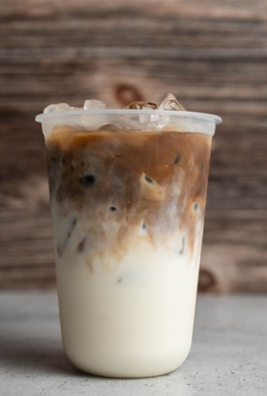
Iced Cafe Bạc Xỉu (Light Vietnamese Coffee)
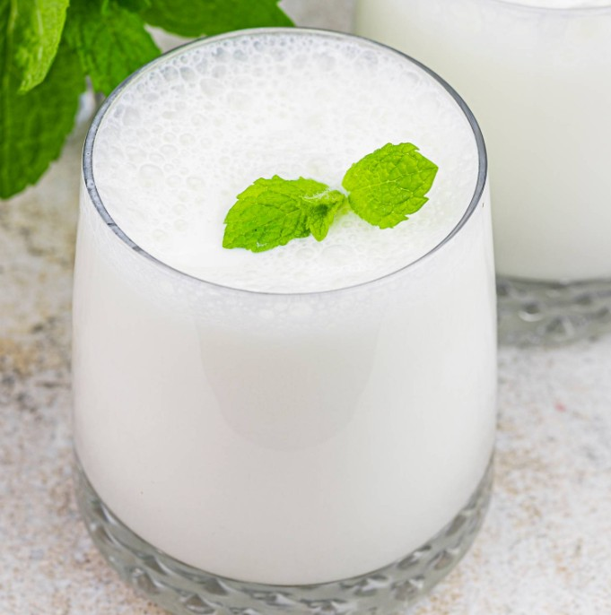
Ayran (a yogurt-based drink popular in Middle Eastern and Mediterranean)
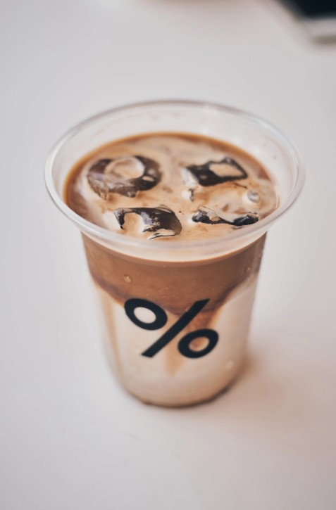
Iced Arabica Coffee
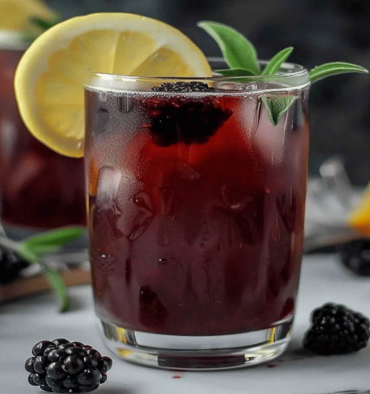
Iced Turkish Blackberry Sage Tea
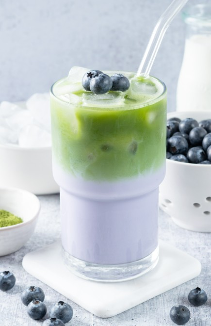
Iced Blueberry Matcha Tea
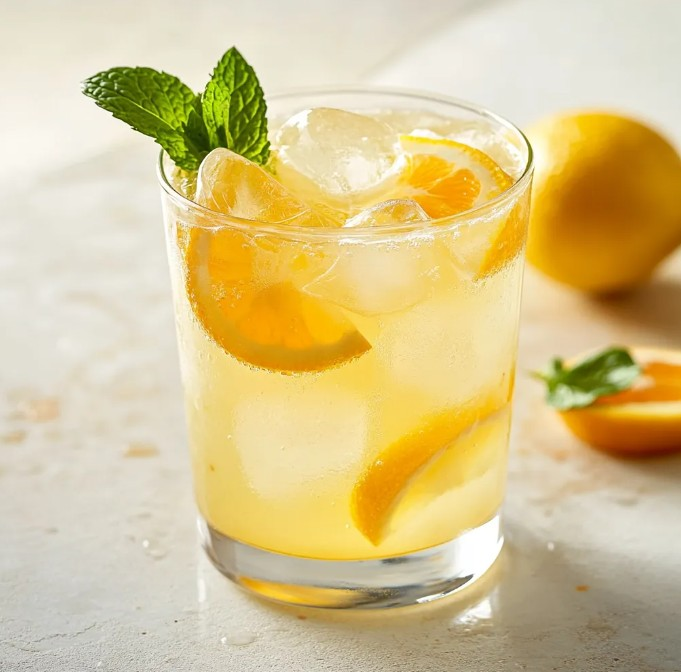
Iced Turkish Orange Blossom Lemonade
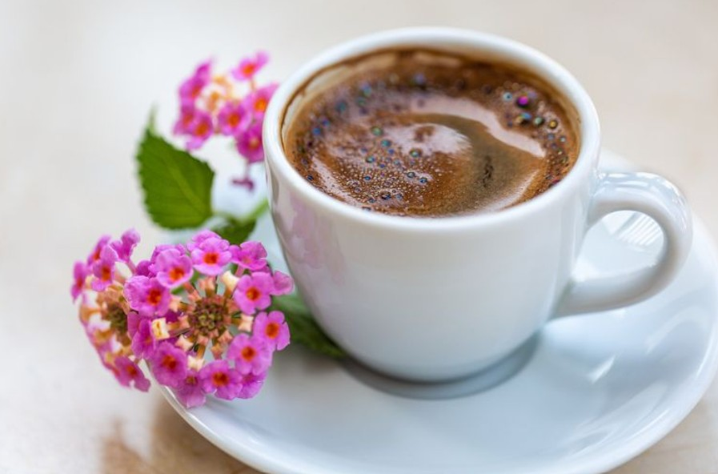
Ghawa (Saudi Coffee)
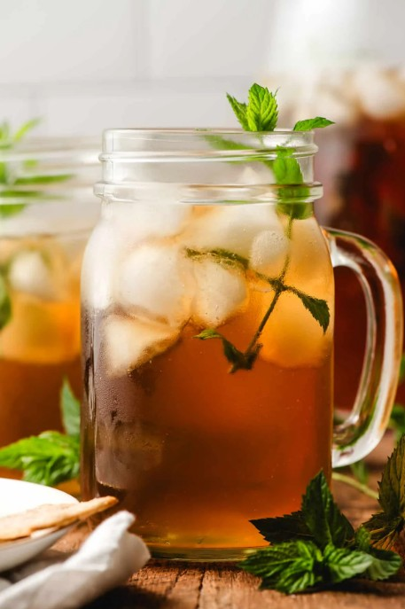
Iced Turkish Mint Tea
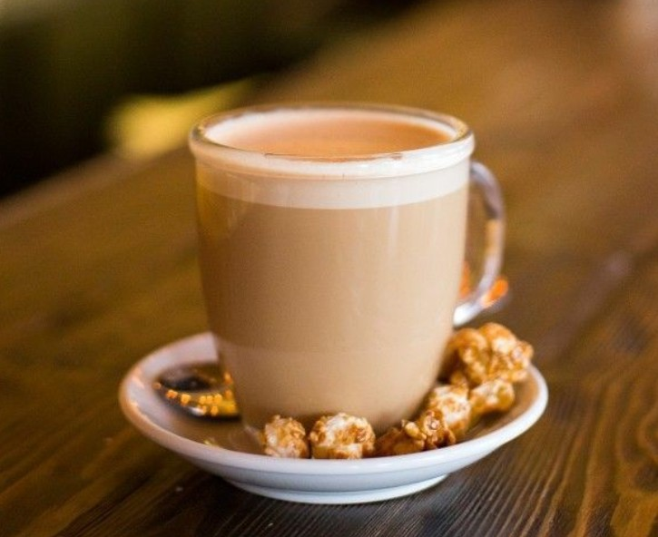
A Raf coffee, also called a Russian coffee, is a mixture of espresso, cream, and vanilla sugar combined using a steam wand.
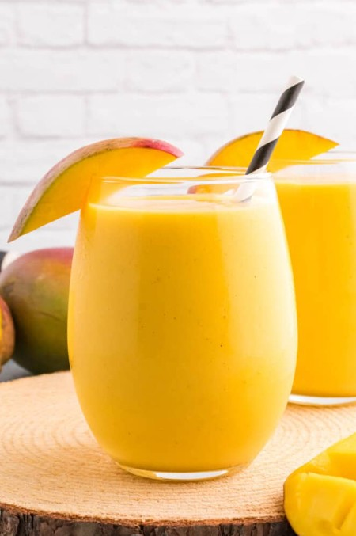
Mango Lassi (Indian Yogurt Drink made with mango pulp)
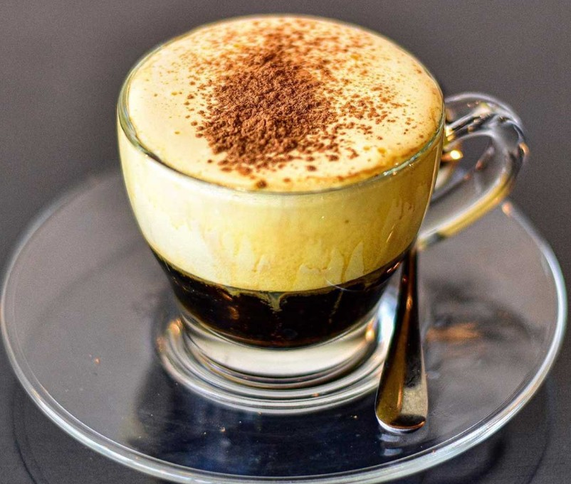
Vietnamese Egg Coffee (Cà Phê Trứng)
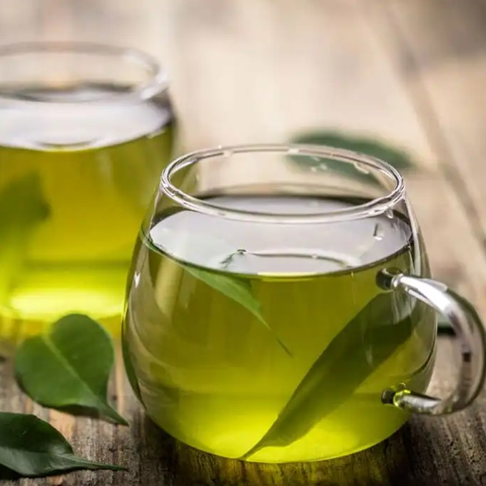
Hot Cardomom Green Tea
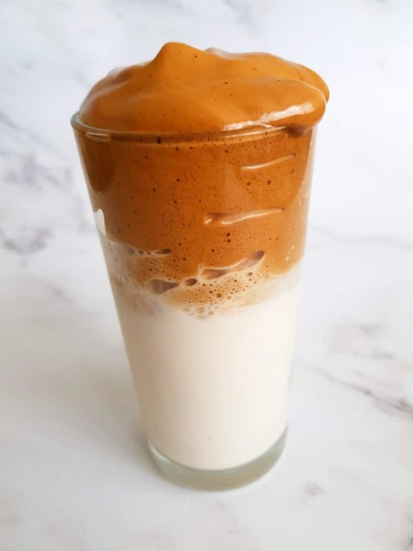
Korean Dalgona coffee is traditionally an iced coffee drink made of a combination of sweet, fluffy whipped coffee topping served on top of iced milk.
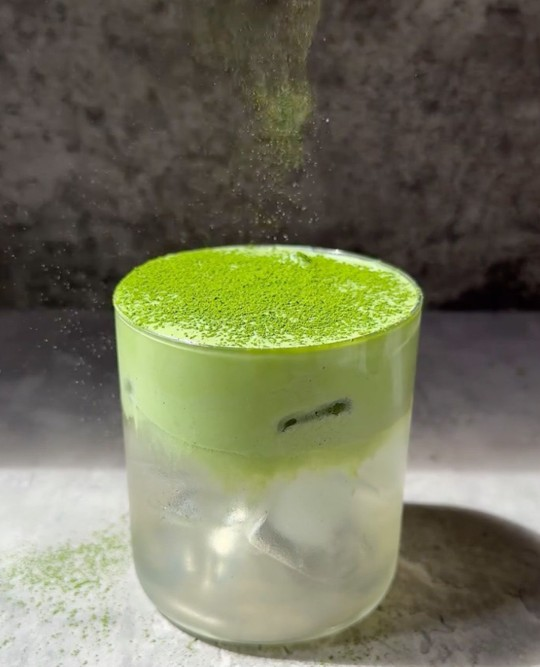
Matcha Coconut is coconut water with matcha milkfoam.
Social Media and Contact Page
Back to Gallery